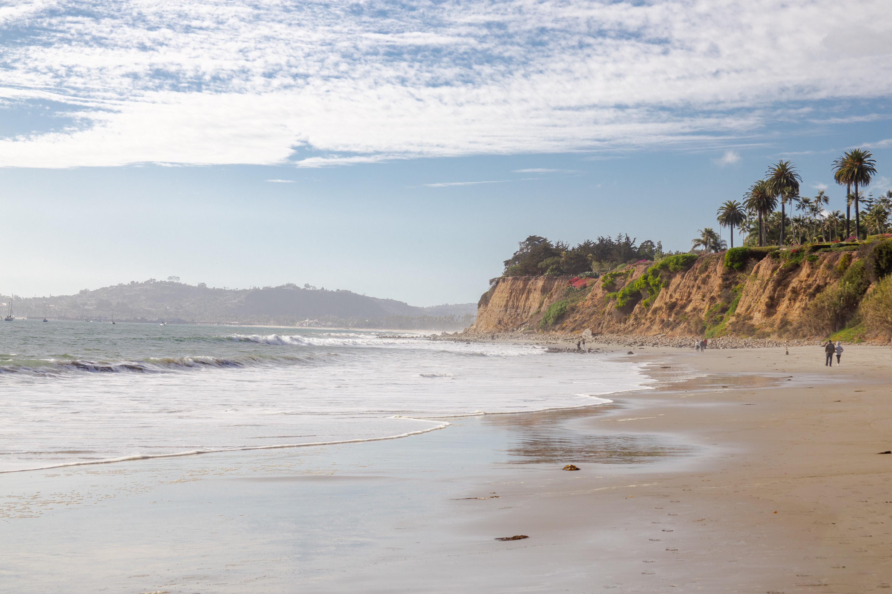

Santa Barbara
Santa Barbara was founded in 1786 by Father Fermín Francisco de Lasuén. Once a part of Mexico, the newly acclaimed U.S territory from the Mexican-American War has become quite the place to visit in California. It is widely known for its white, sandy beaches but is actually home to the 10th mission home to be founded in the state. It was originally built to preach Christianity to the Native Americans but soon became an excellent source of food. With the help of the Native Americans, the Spanish Franciscans cultivated many livestock and crops such as olives, oranges, wheat, peas, corn, and barley. The mission has been in continuous use since the day it was constructed and was named a national monument in 1960. Now it remains a popular place many celebrities like Tom Cruise, Jennifer Lopez, Kevin Costner, and Oprah Winfrey call home. Plan a visit to this historical city and you just might see a famous face!
Weather Card
°F
User Card
-